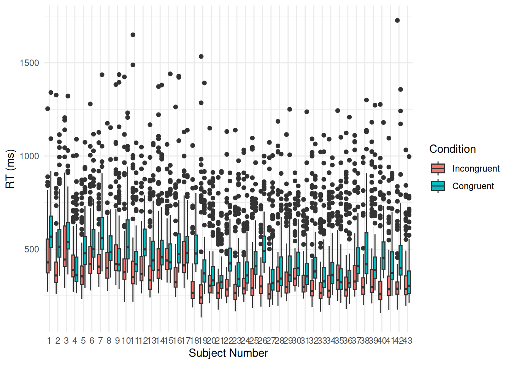

#q3 <- c()HW1 Template
Due: Friday, 4/10/2026 by 11:59pm
166 points
Topics: Intro to Bayesian data analysis, Problems with NHT, Prediction vs. Explanation, Linear Models
Please turn in this assignment on Canvas. You should turn in your .Rmd file, i.e., your R markdown file, as well as the corresponding .html (i.e., the knitted R markdown file).
If you worked with someone on these homework please list them above under your name.
Question 1 (30 points total)
1A.
Using the logic of McElreath, show how different hypotheses may map onto the same process models and subsequent statistical models (5 points)?
Given two or more hypotheses, there are plenty of causal frameworks that are consistent with all of those hypotheses at the same time.
For example, let’s say that I tend not to hang out with people on Fridays. After some investigation my friends discover it is because I do community service early every Saturday morning.
In this case the Process Model/Causal explanation can be written as… Process Model: David avoids hanging out on Fridays so that he can be well-rested for his community service on Saturdays.
This may make them curious about what this says about me. One potential explanation (Hypothesis 1) is that I am a good guy who cares about his community. Another potential explanation (Hypothesis 2) is that I got a DUI but weeped so loudly at my sentencing that the judge decided to let me off with mandated community service. In terms of hypotheses we would get… H1: David is a good guy who cares about his community. H2: David is a bad guy with court-mandated community service.
Both hypotheses align with the process model, and would further align with the following statistical model… Statistical Model: We are statistically more likely to receive a “Sorry can’t hang tonight :(” text from David on Fridays as opposed to other days of the week.
In any event, the process model/statistical model are equally well explained by each hypothesis. Because both hypotheses generate the same process model and the same observable statistical pattern, we cannot distinguish between them using the data alone.
1B.
How does this make Null Hypothesis Statistical Testing problematic? What is a better approach? (10 points)
This creates a problem for an NHST approach because NHST can only directly test whether some data is consistent with a statisical model, although many people assume that they are testing underlying hypotheses. When you do something like a t-test you are forced to confound the hypothesis, which is typically a natural language phrase, with the statistical model derived from that hypothesis.
One of McElreath’s points is that multiple hypotheses can map to the same statisitical models. If this happens then NHST cannot tell the the difference between a hypothesis being correct (in the sense that the world actually works that way) and a hypothesis being incorrect but still modeled by the same statistical model. Without further information, NHST gives you no way to test between any of these colliding hypotheses.
A better approach is to use a Bayesian approach (or similar) that can provide information about the relative plausibility of different hypotheses by allowing us to estimate P(Model n | Data) via (P(Data | Model n) * P(Model n)) / P(Data) and compare the relative probabilities of each model given the data. Since P(Data) is independent of modelm we can just calculate P(Data | Model n) * P(Model n) for each model and do the same relative comparison. Using the example from the first question we can define the following variables…
Model 1 = David is a good guy who cares about his community. Model 2 = David is a bad guy with court-mandated community service. Data = David declines invitations for Friday night hangs.
Although P(Data | Model 2) and P(Data | Model 1) are roughly equal since they imply the same outcome, different values for P(Model 1) and P(Model 2) would result in different values for P(Model 1 | Data) and P(Model 2 | Data), which are the values of interest. It is left to the reader to decide the relative values of P(Model 1) and P(Model 2).
1C.
Describe an example in Psychology or Neuroscience where a Null hypothesis and an Alternative hypothesis map onto the same process and statistical model. Please use a different example than the Stroop example that was talked about in lecture. It would be good if you could think of a real example, but if you’re having trouble you can invent one. (10 points)
1D.
Based on lecture and the Cohen reading, what are two problems with the use of p-values? What is one solution as specified in lecture or the Cohen reading (more than just don’t use p-values)? (5 points)
Question 2 (10 points)
2A.
According to Yarkoni and Westfall, 2017, does Psychology and Neuroscience suffer from an overfitting or underfitting problem? What drives this problem? How is this problem related to the replication crisis in Psychology? (5 points)
They argue that Psychology suffers from an overfitting problem: “The impact of p-hacking on the production of overfitted or spurious results is hard to overstate” (4). There are many issues driving this problem.
2B.
Explain 3 solutions to help to counteract the problem you described in Part A. Does p-hacking cause overfitting, underfitting or both? (5 points)
Question 3 (10 points)
Which of the following represents the probability that “it is sunny on Friday”? Modify the q3 vector to match your choices.
A. P(Friday | Sunny)
B. P(Sunny | Friday)
C. P(Sunny & Friday)
D. P(Friday & Sunny) / P(Friday)
E. [P(Friday | Sunny) * P(Sunny)] / P(Friday)
Question 4 (10 points)
Suppose that you have one model globe of the Earth and one model globe of Mars. The Earth globe is covered in 70% water and 30% land. The Mars globe is covered in 1% water and 99% land. Suppose that one of your friends picks one of these globes at random and tosses it in the air and tells you that her right index finger is touching water. For the calculations below, please show all math in your RMD document.
4A.
Given this knowledge, what is the probability that your friend tossed the Earth globe? Call this variable “P1” in your code and output the result of your calculation. (5 points)
#(P1 <- )4B.
Your friend tosses a globe and her right index finger is touching land. Given this information, what is the probability that your friend tossed the Mars globe? Call this variable “P2” in your code and output the result of your calculation. (5 points)
#(P2 <- )Question 5 (10 points)
The RMD template document for this assignment contains a section of code that executes the Rasmus Bath example from class. This chunk of code shows you how to calculate the posterior distribution for the probability of signing when your observation was that 6 out of 16 people signed up.
#Here is the code for the Rasmus Bath example where we were assessing how many people signed up for our salmon shipping service. The first chunk of code shows you how to calculate the posterior distribution for the probability of signing when you observed 6 people signing up out of 16
#Try to perform the same simulation but this time using McElreath's grid approximation technique and sampling from the posterior. Call the variable with the posterior distribution posterior_grid.
# Number of random draws from the prior
n_draws <- 100000
set.seed(2026)
#this prior is our prior belief of the number of Danes that will buy our fish
prior <- runif(n_draws, min = 0, max = 1) # Here you sample n_draws draws from the prior
hist(prior) # It's always good to eyeball the prior to make sure it looks ok.
# Here you define the generative model
generative_model <- function(theta) {
#this is based on the binomial distribution using theta as p
#this should return the number of successes out of 16 people
#using the probability of success as theta for the binomial
num_buy <- rbinom(1, 16, theta)
return(num_buy)
}
# Here you simulate data using the parameters from the prior and the
# generative model
sim_data <- rep(NA, n_draws)
for(i in 1:n_draws) {
sim_data[i] <- generative_model(prior[i])
}
# Here you filter off all draws that do not match the data.
#From our data we had 6 yes out of 16 people
posterior <- prior[sim_data == 6]
hist(posterior) # Eyeball the posterior
length(posterior) # See that we got enough draws left after the filtering.
# There are no rules here, but you probably want to aim
# for >1000 draws.
# Now you can summarize the posterior, where a common summary is to take the mean
# or the median posterior, and the 95% credible interval.
median(posterior)
mean(posterior)
max(posterior)
quantile(posterior, c(0.025, 0.975))5A.
Write a chunk of code that uses McElreath’s grid approximation approach to estimate the posterior. Have 1000 evenly-spaced points in the grid. Save the posterior distribution as “posterior_grid”. (5 points)
5B.
Use “posterior_grid” to generate 10,000 samples from the posterior and calculate and output the following values:
- “med5” (posterior median) (1 point)
- “mn5” (posterior mean) (1 point)
- “mx5” (posterior max) (1 point)
- “CI5” (the 95% credible interval of the posterior, formatted as a vector) (2 points)
Question 6 (10 points)
Let’s imagine we’ve just received information from the CEO in the Rasmus Bath example that the signup rate in Denmark is usually between 5-15%.
6A.
Using this new knowledge, recode your Rasmus Bath example. You can either use the original Bath structure from the code given in Q5, or execute this McElreath’s way using grid approximation (using 100 as the length of the grid). For whichever option you choose, set your seed to 2026, calculate the posterior, and then generate 10,000 samples from the posterior (2 points) and calculate and output the following values:
- “med6” (posterior median) (1 point)
- “mn6” (posterior mean) (1 point)
- “mx6” (posterior max) (1 point)
- “CI6” (the 95% credible interval of the posterior, formatted as a vector) (2 points)
6B.
How has your recoding changed your prediction for the number of signups from your result in Q5? (3 points)
Question 7 (10 points)
Code for a grid approximation is written in your RMD template. Please use it to answer the following questions:
set.seed(2026)
p_grid <- seq( from=0 , to=1 , length.out=1000 )
prior <- rep( 1 , 1000 )
likelihood <- dbinom( 6 , size=9 , prob=p_grid )
posterior <- likelihood * prior
posterior <- posterior / sum(posterior)
set.seed(100)
samples <- sample( p_grid , prob=posterior , size=1e4 , replace=TRUE )7A.
What proportion of the posterior probability lies below p = 0.35? Calculate this value (call it “A7”) and output the result. (2 points)
#(A7 <- )7B.
10% of posterior probability lies above what value of p? Calculate this value of p (call it “B7”) and output the result. (2 points)
#(B7 <- )7C.
The highest density 50% of the posterior probability lies between what values of p? Call this variable “C7” and output the result. (2 points)
#(C7 <- )Code for another grid approximation using a different prior appears in your RMD template after parts 7A-7C. Please use this new code to answer the following questions:
p_grid <- seq( from=0 , to=1 , length.out=1000 )
prior <- dbeta(p_grid, 7, 30)
likelihood <- dbinom( 6 , size=9 , prob=p_grid )
posterior <- likelihood * prior
posterior <- posterior / sum(posterior)
set.seed(100)
samples <- sample( p_grid , prob=posterior , size=1e4 , replace=TRUE )7D.
What value is our new prior centered on? Calculate this value (call it “D7”) and output the result. (2 points)
#(D7 <- )7E.
What proportion of the posterior probability lies below p = 0.35? Calculate this value (call it “E7”) and output the result. (2 points)
#(E7 <- )7F.
10% of posterior probability lies above what value of p? Calculate this value of p (call it “F7”) and output the result. (2 points)
#(F7 <- )7G.
The highest density 50% of the posterior probability lies between what values of p? Call this variable “G7” and output the result. (2 points)
#(G7 <- )Question 8 (15 points)
8A.
Label the likelihood and the priors in the above model definition. Assign “def1”, “def2”, and “def3” to the proper variables below in your RMD document. (2 points)
def1 <- 'y(i) ~ Normal(mu, sigma)'
def2 <- 'mu ~ Normal(5, 30)'
def3 <- 'sigma ~ Beta(3,25)'
#likelihood <-
#mu_prior <-
#sigma_prior <- 8B.
How many parameters are in the posterior distribution for the above model? Assign a numeric value to the variable ‘n_params’ in your RMD document. (2 points)
#n_params <- 8C.
Using the model definition above, write down the appropriate form of Bayes’ Theorem that includes the proper likelihood and priors. (3 points)
8D.
Imagine now a different model definition with the following pieces:
y(i) ~ Normal(mu, sigma)
mu = alpha + Beta*x(i)
alpha ~ Normal(5, 30)
Beta ~ Normal(1,5)
sigma ~ Beta(3,25)
How many parameters are in this model? Are any of our priors strange or inappropriate? (5 points)
8E.
When we generate samples of the parameters from the posterior after fitting the model in 8.D, what do these samples represent? Think about how the parameters relate to the data they are trying to describe. (3 points)
Question 9 (15 points)
#Load the Howell height data, remove adults, and mean-center
#data("Howell1")9A.
Fit a linear regression to predict “height” from “weight_centered” using the lm function. Call this “heights_lm” and output your model summary. Write a brief response to the following question: For every one unit increase in weight, how much taller does the model predict a child gets? (5 points)
9B.
Fit a linear regression to predict “height” from “weight_centered” using quap. Call this model “heights_quap”. Output the estimates from the model. Write a brief response to the following question: Do your estimates match what you get from lm? (5 points)
9C.
How much do you have to change your priors in the quap model to get different results from lm? Try different sets of priors and describe what you notice with these changes. (5 points)
Question 10 (27 points)
#read in the stroop data
Stroop_Data <- read.csv("stroop_dataset_HW1.csv")
ggplot(Stroop_Data, aes(x=as.factor(subject_num), y=RT, fill=as.factor(Condition))) +
geom_boxplot() +
scale_fill_discrete(name = "Condition", labels = c("Incongruent", "Congruent")) +
xlab("Subject Number") +
ylab("RT (ms)")
10A.
Check the balance of the Stroop Dataset using the table() function. Are there equal numbers of data points in each combination of “Condition” and “young_or_old” levels? (2 points)
10B.
Fit a Type III ANOVA (hint: the Anova() function in the ‘car’ package can handle different types) that has:
- reaction time (“RT”) as your dependent variable
- main effects of “Condition” and “young_or_old”
- an interaction effect of “Condition” x “young_or_old”
Call this model “anova_freq_fixed” and output its ANOVA table. (2 points)
10C.
Compute the effects for each factor, as well as the interaction. Call these values “condition_effect”, “age_effect”, and “interaction_effect” and output the values. (2 points)
10D.
Fit a linear regression model using lm() to predict reaction time (“RT”) with condition (“Condition”), age (“young_or_old”), and an interaction of condition and age. Call this model “linear_reg_freq_fixed” and output a summary. (3 points)
10E.
We’ll explore the linear algebra-based calculations that underlie a linear regression. First, create a matrix called “X” that contains the following columns. Output the first 6 rows of the matrix. (2 points)
- “Condition” from your Stroop data
- “young_or_old” from your Stroop data
- a calculated interaction column (think: multiplication) of “Condition” and “young_or_old”
- an “intercept” column (repeating “1” for the length of your data frame)
10F.
Next, create a vector (a list) “y” that contains the RTs from your Stroop dataset. Output the contents of “y”. (2 points)
10G.
Use the Moore-Penrose pseudoinverse to return the coefficients (save them in a variable called “beta_hat”) of your regression calculation. Output these coefficients. (5 points)
#(beta_hat = ) 10H.
Using the same DV and IVs as the linear regressions in Parts C and D, fit a linear regression using quap. Set your seed to 2026 before fitting the model. Call this “linear_reg_bayes_rethink_fixed_quap” and output a summary. (5 points)
10I.
How do the results compare between the frequentist approach and the Bayesian approach? (2 points) Please justify the priors you chose for the Bayesian approach and explain how they might lead to more similar or more different results compared to the frequentist approach. (2 points)
Question 11 (15 points)
Thinking about your research, please identify a research question of interest and answer the following. Please justify all of your choices [using logic and/or literature].
11A.
Write out your research question. (3 points)
11B.
What parameters are you trying to estimate from your data? (3 points)
11C.
How many parameters does your model have? (3 points)
11D.
Write out your research question (or a simplified version of it) in Bayesian form. (3 points)
11E.
How do you think your parameters are distributed? (3 points)